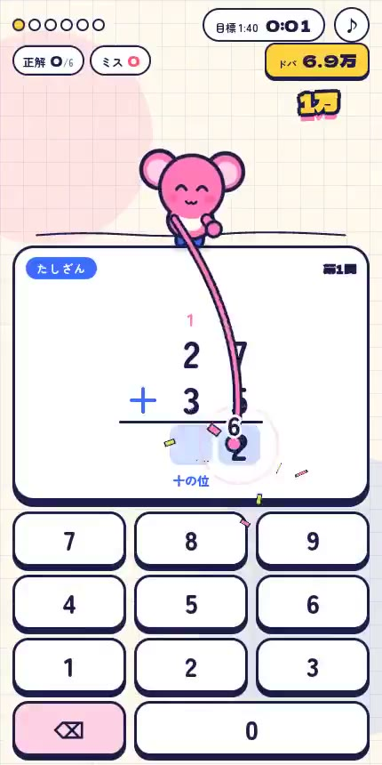
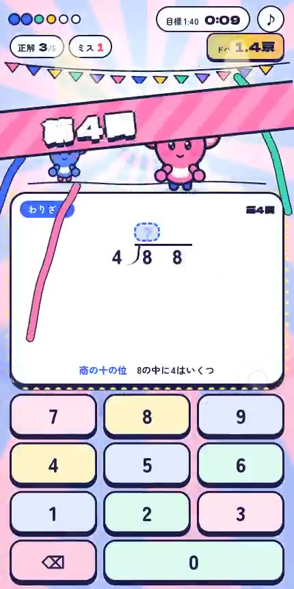
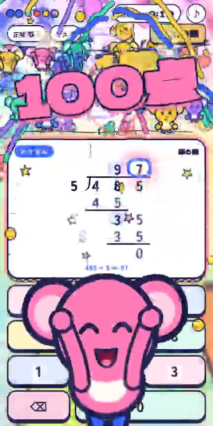
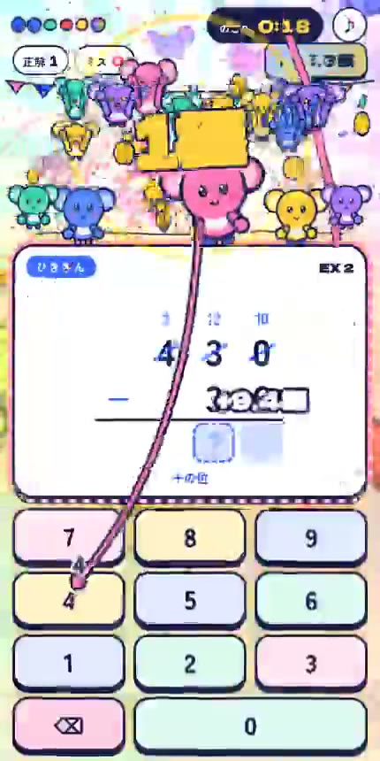
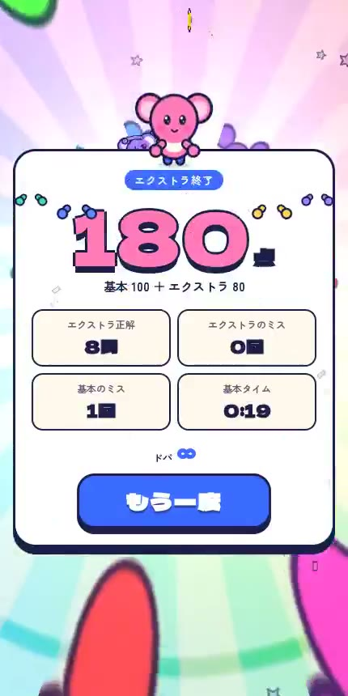

REFERENCE BREAKDOWN · 2026.09.28 · 検討資料
「玩具の質感」から、
「画面と音が育つ遊び」へ。
参考をもっと直接分解する。明るい面色、濃い輪郭、太い見出し。押した数字をキャラが運び、問題が進むと舞台と音楽が変わる。次の検討の基準をここへ戻す。
アプリは変更していません。詳しい分析 · 元投稿（9月26日） · 元動画を直接開く · 公開ソース
同じ目線で比べる
Xの参考動画
ボタンを押すと、その区間を音付きで再生します。
Sansu v4 · 390×844

52ec984f / pokomoko-star-arcade-v4。前回のproduction検証時の画像。今回のライブ撮影ではありません。
音は元動画で試聴できます。分析側では音声入力が非対応のため、聴いた印象を記述していません。音の仕組みは後日の公開ソースから確認しており、動画当時の正確な編成・テンポとは区別します。
一周の中で、構図が変わる
時刻は元動画から抜き出したフレーム。ボタンでその地点へ移動し、再生操作で前後を確認できます。

数字がキーから答えへ動く
斜めの見出し・旗・色の増加 観客が増え、舞台が育つ
観客が増え、舞台が育つ
100点と巨大な前景キャラ
特別状態は画面全体が変わる
結果の数字と次の主操作配色の問題は「クリーム色」だけではない
参考も生成りを使う。差は、茶色のぼけた影・多重の縁・光沢部品に対し、紺の輪郭と鮮明な色面が一貫していること。
色値は公開CSSより。動画の画素値ではありません。ぽこもこ自身の色・模様を変更する提案ではありません。
| 要素 | 現状の差 | もっと参考に近づける案 |
|---|
| 形と影 | ベベル・ぼかし・多重の縁 | 濃い輪郭、短い硬い影、明るい面 |
| 文字 | 節目も小さい表示の中に収まる | 太い見出し用の字形。節目の数字を前景へ |
| キャラの役割 | 答えたあと、光を受け取る | 押した数字を解答欄へ送る動作に参加 |
| 発展 | 3・5連続で局所的な変化 | 問題を進めると舞台が育ち、連続正解で短い特別演技 |
音は、画面と同じ段階で変わる
公開版では、曲の和音に合うキー音、つかむ音、置く音が別々にある。音楽は進行に合わせて楽器が入り、効果音とキャラの動きが拍でつながる。
② リズムが育つキック → ベース → クラップ → ハット。
③ 音が広がるアルペジオ、和音、旋律、コーラスを段階的に追加。
④ ためて解放高域を絞り、ロールと上昇音。到達で低音と和音を返す。
公開音源の構造。元動画を聴いて特定した楽器ではありません。通常の公開版テンポは約113→128 BPM。音量を増やすだけの仕組みではありません。
ぽこもこで最初に試す音の設計
押下はすぐ返す。数字が着いた瞬間に接触音。3連続でリズムの層、5連続で短い上昇フレーズと和音。誤答でBGM全体を落とさない。音楽の拍に合わせるのは演出で、入力処理は待たせない。
次の比較で決めること
参考から直接取り入れる
- 色面・輪郭・短い影の統一
- 通常とピークの文字・縮尺の差
- キーと解答欄をつなぐキャラの行動
- 進行で発展する舞台と音楽
ぽこもこに合わせる
- 元の顔・体・布・配色を維持する
- 小さい補助文字は減らす
- 強制的な待ちを作らない
- 無限の数字や全面の効果密度は採らない
先に作るのは、通常・入力・3連続・5連続の4画面と、音付き12〜15秒の絵コンテ動画。参考と並べ、配色・構図・演技・音の方向を決めてから実装へ進む案です。